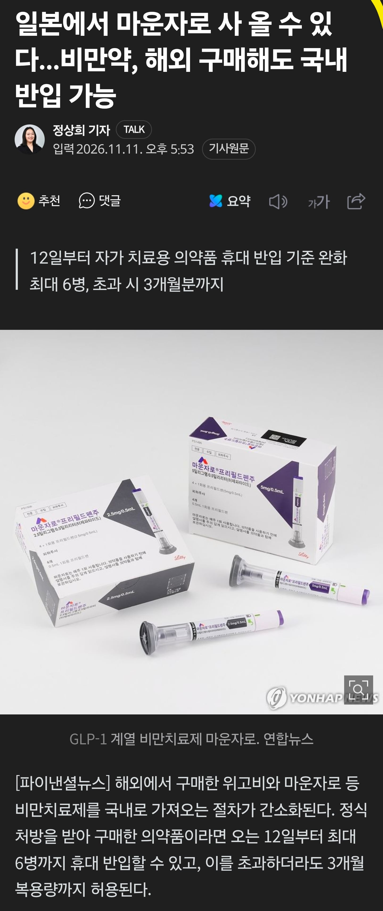
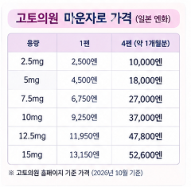

https://n.news.naver.com/mnews/article/014/0005602872


에페 첫달 16만~22만원 선
일본 마운자로 첫달 1만엔 = 85,900원
대신 반입은 3개월분까지만 허가한다고 함
https://n.news.naver.com/mnews/article/014/0005602872


에페 첫달 16만~22만원 선
일본 마운자로 첫달 1만엔 = 85,900원
대신 반입은 3개월분까지만 허가한다고 함
드디어! 대마도에서도 받아올 경로있을까? ㅋㅋㅋ 당일치기ㅓ되는데
대마도는 병원없음
머 소문으론 도쿄성지 온라인 진료받고 대마도로 택배로 받을수 있다고하던데
일본가서 사와서 여행비 충당 할라고 몰래 파는 애들 있을것 같네...
한국 가격 낮춰야겠지?
우리나라에서 마운자로 12.5 15 맞으면 한달에 75만쯤한다
3개월분이면 일본이랑 백만원 넘게 차이난다
5mg 3개월분만해도 비행기값 제외 차익 30만원은 날거같은데
한국에서 호구짓하면서 맞느니 공짜 일본여행 다녀오는 돈이네
당일치기로 마운자로 3개월분 이랑 한끼 사먹고 와도 한국보다는 싼거네
일본 찐성지가면 저것보다 더쌈
2.5mg 한달치 7천엔 > 지금 환율 840원기준
1개월치 58,000원임
3개월치 174,000원
한국기준 2.5mg 3개월치 한국 찐성지에서 온누리 신공해도 75만원이상이다.
일본도 공급가에 300엔~500엔 띠기로 팔더라
진짜 존.나.쌈 ㅅㅂ
그정도면 마운자로에 물 탄거 아니냐 와 개 싸 네 시 발 뭐 고 ?
일본 당일 갔다오까..? 훨싼데..?
마운자로 사는친구들은 일본여행 겸사겸사 갔다오면 되겠구만
일본에서 사와서 국내에서 팔다 걸리는 사람 많이 나올듯
마운자로사러 일본가야겠네
그냥 가격 낮춰라
여행비 50만원까지는 써도 이득임
그냥 말도 안되는 국내 가격을 좀 협상해서 낮추면 안되냐
병신같은 나라ㅋㅋ 이걸 이제야 풀어주는것도 웃기고
비만율이 일본보다 높은데 국민건강에는 관심도없는
보건복지부도 웃기고 씨발년들ㅋㅋ
어휴 드디어 ㅋㅋㅋㅋㅋㅋㅋ 논리도 없이 규제하는거 옹호하는꼴 개같더만ㅋㅋ